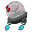
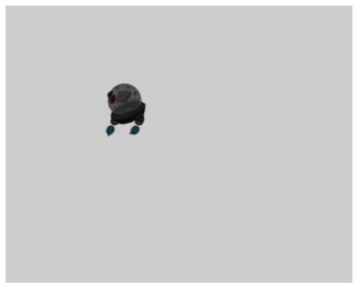

Tutorial 1 <-- Tutorial 2 --> Tutorial 3
Main tutorial guide page
In tutorial 1, we looked at creating the basic structure for our game scene. We created a camera object and a game object with a simple renderable. In this tutorial, we will look at resource management, a more advanced renderable type and user input.
Source Code can be downloaded here.
Image Files

Images, audio and other file types are the resources that your game will use. We make requests to the engine to load files in loadScene() by providing the file paths where the files can be located. The engine will asynchronously load the files into RAM and provide a means of access them so we can start using them. The loadScene() function is always called prior to initialization() and you are guaranteed that the resources have fully loaded when initialization() is called. Once the resources are loaded, different classes of objects will retrieve resources as needed by providing the string path to the resource. These variables identify each unique resource.
To facilitate the loading of resources, we create constants to identify the file paths for our resources and provide a consistent way for referencing the resource. By convention, we store resource files in the "assets" directory of our game engine file hierarchy. The game engine supports PNG image files, WAV audio files and text files.
[Note: When creating resources for texture maps, the dimensions must be on the order of perfect power of 2.
Examples of image size includes 64x64, 512x2048 or 16x128.]
function MyGameScene() {
this.mCamera = null;
this.mRenderable = null;
this.mGameObject = null;
this.kTexture = "assets/minion_portal.png"
};
gEngine.Core.inheritPrototype(MyGameScene, Scene);
The code above declares three instance variables that will be used in our scene as well as a string constant that identifies the path to an image resource file.
The loadScene() function will queue our texture for loading by using the gEngine.Textures.loadTexture() function. There is also gEngine.Textures.loadAudio() function for loading audio files and a gEngine.Textures.loadTextFile() function for loading text files. The files we identify will load asynchronously. We parallel the loading of resources with the cleanup and deallocation of resources in unloadScene() which will be called on program exit.
function loadScene() {
gEngine.Textures.loadTexture(this.kTexture);
};
function unloadScene() {
gEngine.Textures.unloadTexture(this.kTexture);
};
The initialization() function is mostly the same as it was in the previous tutorial. Now we create a TextureRenderable instead. This renderable has all of the same functionality as the Renderable but allows us to utilize a bitmap image instead of using a solid color.
MyGameScene.prototype.initialize = function () {
this.mCamera = new Camera(
vec2.fromValues(50, 40), // position of the camera
100, // width of camera
[0, 0, 500, 400] // viewport (orgX, orgY, width, height)
);
// set the background color of our view to medium grey
this.mCamera.setBackgroundColor([0.8, 0.8, 0.8, 1]);
// create a new "texture" renderable object
this.mRenderable = new TextureRenderable(this.kTexture);
// create a new game object with the new renderable
this.mGameObject = new GameObject(this.mRenderable);
this.mGameObject.getXform().setSize(16, 16);
this.mGameObject.getXform().setPosition(30, 50);
};
The GameObject is created just as before, but now, we have a a reference to our new texture-based renderable. We also removed the behavior code for the GameObject. We no longer set a front direction or a speed. We do this so that we the GameObject does not move independently. We will soon be adding code to move the GameObject with keyboard controls. Without changing anything else in our code, viewing this in a web browser should give you the following result...

Tracking user events involves polling for the status of keys and the mouse using a number of functions provided by gEngine.Input. To find the state of a particular key, we use gEngine.Input.isKeyPressed(). To find out if the mouse button is pressed, we use gEngine.Input.isButtonPressed(). In this example, we control movement of our TextureRenderable with the keyboard.
MyGameScene.prototype.update = function () {
// Check for user keyboard input to control GameObject
if (gEngine.Input.isKeyPressed(gEngine.Input.keys.A)) {
this.mGameObject.getXform().incXPosBy(-0.5);
}
if (gEngine.Input.isKeyPressed(gEngine.Input.keys.D)) {
this.mGameObject.getXform().incXPosBy(0.5);
}
if (gEngine.Input.isKeyClicked(gEngine.Input.keys.Q)) {
gEngine.GameLoop.stop();
}
this.mGameObject.update()
};
Notice that we have removed the call to this.mGameObject.update(). Had we left it in, the game object would have moved indefinitely to the right despite our keyboard input due to the speed and direction settings we gave in the initialization() function. Also, when the 'Q' key is pressed, everything comes to a halt. Keyboard input is no longer processed by the game and motion is stopped. After gEngine.GameLoop.stop() is called, the game loop stops and the unloadScene() function is called.
[Note: When the game loop stops, unloadScene() is called where you can then instantiate a completely different Scene object and call gEngine.Core.startScene(nextScene) to start a new game loop. This is how you can implement a game with multiple levels.]
Audio implementation is similar to images.
function MyGameScene() {
this.mCamera = null;
this.mRenderable = null;
this.mGameObject = null;
this.kTexture = "assets/minion_portal.png"
this.kGameSong = "assets/gameSong.mp3"
};
gEngine.Core.inheritPrototype(MyGameScene, Scene);
function loadScene() {
gEngine.Textures.loadTexture(this.kTexture);
gEngine.AudioClips.loadAudio(this.kGameSong);
};
function unloadScene() {
gEngine.Textures.unloadTexture(this.kTexture);
gEngine.AudioClips.unloadAudio(this.kGameSong);
};
MyGameScene.prototype.update = function () {
// Check for user keyboard input to control GameObject
if (gEngine.Input.isKeyPressed(gEngine.Input.keys.A)) {
this.mGameObject.getXform().incXPosBy(-0.5);
}
if (gEngine.Input.isKeyPressed(gEngine.Input.keys.D)) {
this.mGameObject.getXform().incXPosBy(0.5);
}
if (gEngine.Input.isKeyClicked(gEngine.Input.keys.Q)) {
gEngine.GameLoop.stop();
}
if (gEngine.Input.isButtonClicked(gEngine.Input.mouseButton.Left)) {
if(!gEngine.AudioClips.isBackgroundAudioPlaying())
gEngine.AudioClips.playBackgroundAudio(this.kGameSong);
else
gEngine.AudioClips.stopBackgroundAudio();
}
};
In this example, we check to see if the mouse button is clicked. We then use gEngine.AudioClips functions to determine if background audio is already playing. If it isn't, we do a function call to start playing our background MP3. If the background audio is already playing, we stop it.
[Note: The mouse input will only respond if the mouse is clicked while hovering over the WebGL canvas in the browser.]
To create text, we are going to use a special kind of TextureRenderable called a FontRenderable. It uses a texture that has all the characters of a font and will copy the appropriate portions of the texture to the screen based on a string value we provide. Several font textures are automatically loaded by the engine and are available to us.
First we declare our new variable for the text we will display.
function MyGameScene() {
this.mCamera = null;
this.mRenderable = null;
this.mGameObject = null;
this.mMessage = null;
this.kTexture = "assets/minion_portal.png"
this.kGameSong = "assets/gameSong.mp3"
};
gEngine.Core.inheritPrototype(MyGameScene, Scene);
We initialize the variable by allocating an new FontRenderable object. We also comment delete the code that sets the renderables direction and speed (our keyboard controls the location now). The code below sets the color, size and position of the text.
You will also notice a call to gEngine.DefaultResources.setGlobalAmbientIntensity(3);. Unlike the resources we request the engine to load, there are some resources that the engine provides by default. The texture that makes up the default font we use is an example of a default resource that we never need to load or unload. An ambient lighting source is another default resource. This light is always there but it is normally set very dim (we saw this in our previous examples). It is very dim so that when you do define other lighting sources, the ambient wont conflict with your design.
MyGameScene.prototype.initialize = function () {
this.mCamera = new Camera(
vec2.fromValues(50, 40), // position of the camera
100, // width of camera
[0, 0, 500, 400] // viewport (orgX, orgY, width, height)
);
// set the background color of our view to medium grey
this.mCamera.setBackgroundColor([0.8, 0.8, 0.8, 1]);
// create a new "texture" renderable object
this.mRenderable = new TextureRenderable(this.kTexture);
// create a new game object with the new renderable
this.mGameObject = new GameObject(this.mRenderable);
this.mGameObject.getXform().setSize(16, 16);
this.mGameObject.getXform().setPosition(30, 50);
this.mMessage = new FontRenderable("Sample Text");
this.mMessage.setColor([1, 0, 0, 1]);
this.mMessage.getXform().setPosition(10, 70);
this.mMessage.setTextHeight(5);
this.mMessage.setText("This is sample text");
gEngine.DefaultResources.setGlobalAmbientIntensity(3);
};
For the first time in a while, we need to make modifications to our draw() function. We now have a second renderable.
MyGameScene.prototype.draw = function () {
// Clear the screen
gEngine.Core.clearCanvas([0.8, 0.8, 0.8, 1.0]);
// Activate our camera
this.mCamera.setupViewProjection();
// Draw our objects
this.mGameObject.draw(this.mCamera);
this.mMessage.draw(this.mCamera);
};
When viewing this in a web browser, you should see the following...
Increasing the ambient lighting intensity has brightened our sprite. We will keep that for future projects. Use the "A" and "D" keys on the keyboard to move the sprite left and right. Press the mouse button to activate the background music.
In tutorial 3, we will took at renderables that support textures and game objects that support collision detection.
Tutorial 1 <-- Tutorial 2 --> Tutorial 3